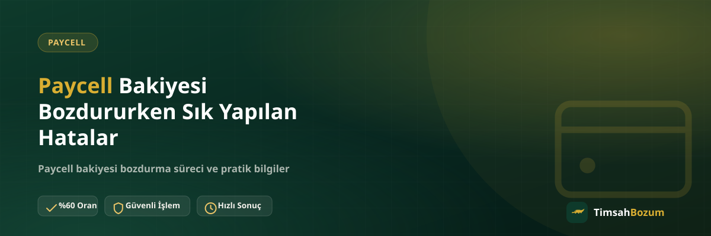

Paycell bakiyesi bozdurmak aslında kısa süren, basit bir işlem. Ama her gün yüzlerce talep arasında aynı birkaç hata tekrar tekrar karşımıza çıkıyor ve bu hatalar işlemi bitirmiyor, sadece gereksiz yere uzatıyor. Bu yazıda Paycell bozdururken en çok karşılaşılan yanlışları ve bunları nasıl önleyebileceğini anlatıyoruz.
Paycell Bozdururken Hangi Hatalar Sık Yapılır?
Paycell bakiye tabanlı bir hizmet olduğu için süreç Razer Gold veya iTunes gibi kod tabanlı hizmetlere göre daha esnek işliyor. Ama bu esneklik, bazı kullanıcıların işlemi aceleye getirip bazı adımları atlamasına da yol açabiliyor. Aşağıdaki başlıklarda bu hataların en yaygınlarını ve her birinin işlemi nasıl geciktirdiğini sırayla ele alıyoruz.
Eski Tarihli Ekran Görüntüsü Göndermek Sorun Olur mu?
Evet, bu en sık rastlanan hatalardan biri. Bakiyeni gösteren ekran görüntüsünü birkaç gün önceden saklayıp daha sonra paylaşmak, görüntüdeki tutarın güncel olup olmadığının teyit edilmesini gerektirir. Bu da işlemi bir adım geriye atar. Paylaşacağın ekran görüntüsünü mesajı gönderdiğin anda almak, bu geri dönüşü baştan önler.
Oranı Teyit Etmeden "Bozduruyorum" Demek Neden Yanlış?
Sitede yayınlanan oran genel bir referans, güncel oran işlem anında WhatsApp üzerinden teyit edilir. Bazı kullanıcılar bu teyit adımını atlayıp doğrudan bakiyesini paylaşıp bekliyor; bu durumda işlem oranın teyit edilmesine kadar ilerlemez. Mesaja başlarken "güncel oranı öğrenmek istiyorum" diye başlamak, bu karışıklığı en baştan önler.
Bakiye Tutarını Belirtmemek İşlemi Nasıl Geciktirir?
Sadece "Paycell bakiyem var" yazıp tutarı belirtmemek, karşı taraftan tutar bilgisinin tekrar sorulmasına yol açar. Oysa ilk mesajda hem ekran görüntüsünü hem de bozdurmak istediğin tutarı birlikte paylaşmak, işlemi genellikle tek turda sonuçlandırır. Bakiyenin tamamını mı yoksa bir kısmını mı bozdurmak istediğini de aynı mesajda belirtmek faydalı olur.
Resmi Hat Dışında Bir Kanaldan İşlem Yapmaya Çalışmak
Bazı kullanıcılar Instagram DM'i veya farklı bir numaradan gelen "TimsahBozum" adına yapılan bir teklife bilgi paylaşıyor. Tüm işlemlerimiz yalnızca resmi WhatsApp hattımızdan (+90 543 887 21 71) yürür; başka bir kanaldan gelen talebe bilgi paylaşmadan önce numarayı doğrulamak, olası bir dolandırıcılığın önüne geçer.
SMS Doğrulama Kodu Paylaşmak Ne Gibi Bir Risk Taşır?
Hattına gelen bir SMS doğrulama kodu bozum işleminin hiçbir aşamasında senden istenmez. Bu kodu paylaşmak hesabına veya hattına erişim vermek anlamına gelir ve Paycell bakiyeni bozdurma süreciyle hiçbir ilgisi yoktur. Böyle bir talep gelirse işlemi derhal durdurup kodu kimseyle paylaşmamalısın.
Mesajı Art Arda Tekrar Göndermek Süreci Hızlandırır mı?
Hayır, aksine karışıklığa yol açar. Aynı bilgiyi birkaç kez art arda göndermek sırayı değiştirmez, sadece konuşma geçmişini karmaşıklaştırır ve hangi mesajın en güncel bilgiyi taşıdığını anlamayı zorlaştırır. Mesajını gönderdikten sonra tek bir yanıt beklemek, özellikle çalışma saatleri dışında (10:00-03:00 arası aktif) gönderilen mesajlar için daha pratik bir yaklaşım.
Birden Fazla Hatayı Aynı Mesajda Yapmak Neyi Değiştirir?
Bazı kullanıcılar yukarıdaki hataların birkaçını aynı anda yapıyor: eski bir ekran görüntüsü, belirsiz bir tutar ve oran teyidi olmadan gönderilen tek bir mesaj. Bu durumda işlem adım adım geriye dönüp düzeltilmesi gereken birkaç noktayla ilerler, tek bir eksik bilgiden daha fazla tur gerektirir. Bu yüzden ilk mesajını gönderirken üç noktayı birlikte kontrol etmek en pratik yaklaşım: güncel ekran görüntüsü, net tutar, oran teyidi beklentisi.
Bu Hatalardan Kaçınmanın En Kısa Yolu
Özetle, Paycell bakiyeni bozdururken güncel bir ekran görüntüsü, net bir tutar bilgisi ve resmi WhatsApp hattı üzerinden iletişim yeterli. Oranı teyit etmeden beklemeye geçmemek ve hiçbir koşulda SMS doğrulama kodu paylaşmamak, işlemi hem güvenli hem de hızlı tutar. Paycell bozdurma sayfamızda güncel oranı ve süreci ayrıntılı bulabilirsin.
İlgili Yazılar
- Paycell Bakiyesi Bozdurmanın Güvenli Yolu
- Paycell Bakiyesini Kısmi Bozdurmanın Avantajları
- Bozum İşlemi Yaparken Nelere Dikkat Etmeli
Paycell bakiyeni bozdururken bu hatalardan kaçınmak işlemi tek turda sonuçlandırır. Hazır olduğunda WhatsApp hattımıza yazarak işlemini başlatabilirsin.